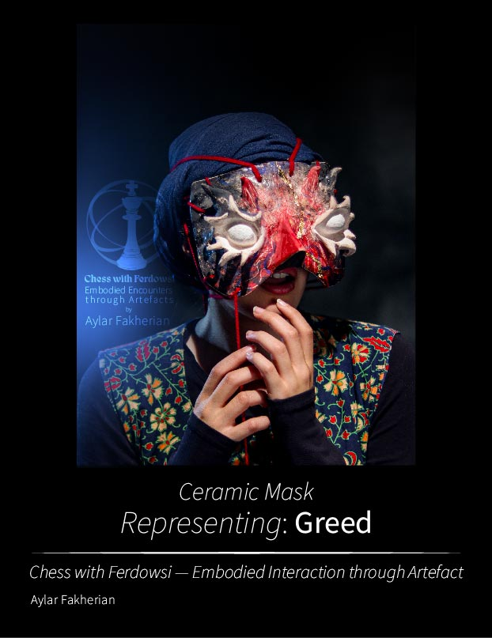
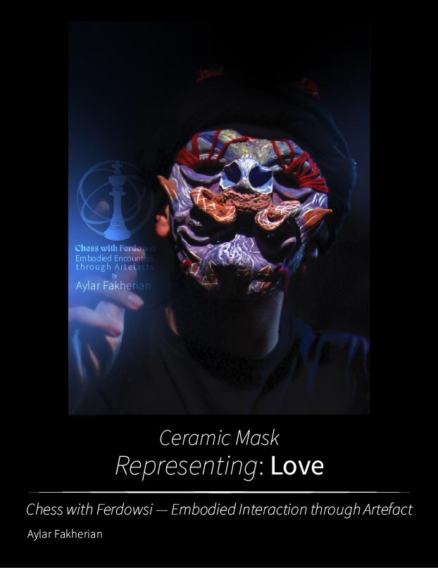
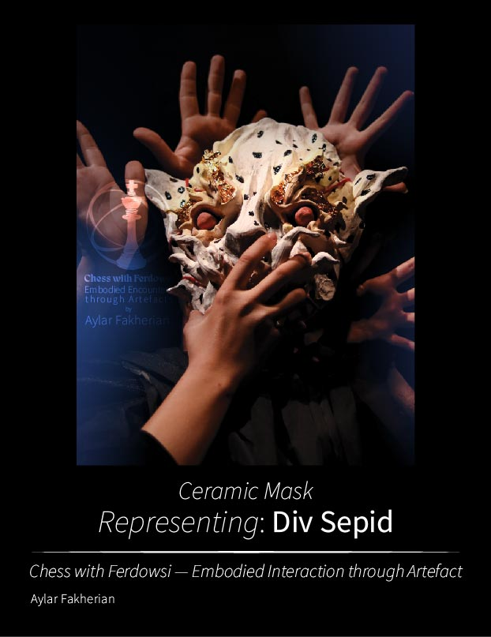
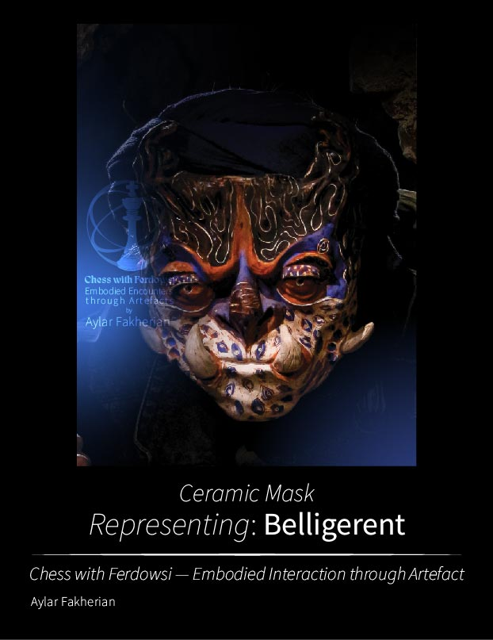

An ongoing Research through Design investigation by Aylar Fakherian.
Chess with Ferdowsi investigates how physical and virtual artefacts shape embodied interaction with cultural narratives through ceramic performance masks and immersive XR.
How can an artefact reshape embodied interpretation, behaviour, and experience?
The project uses the Shahnameh as design material rather than subject matter. Rather than directly reproducing the mythical creatures described in the text, the project explores how cultural narratives can be translated into artefacts that are experienced through embodied interaction.
The research began with conceptual interpretations of the Divs in the Shahnameh, exploring human conditions and qualities such as greed, love, deception, conflict, and belligerence, alongside the figure of Div-e Sepid.
The first study developed ceramic performance masks as physical research artefacts. Their weight, texture, fragility, and physical resistance introduced new conditions for performers during embodied performance.
The project then raised a further question: What happens when the material disappears?
An immersive XR study is currently being developed to explore how the artefacts operate when physical materiality is replaced by virtual configuration.
Research through Design · Practice-based Research · Embodied Interaction · Human-Centred Design · Intangible Cultural Heritage · Digital Cultural Heritage · XR · Physical–Virtual Artefact Comparison
The physical artefact study has been completed. The virtual artefact study is currently under development. Comparative evaluation of the physical and virtual configurations will be added as the research progresses.
Aylar Fakherian is a Human-Centred Design researcher working across Research through Design, interactive systems, immersive experiences, and digital cultural heritage.
```